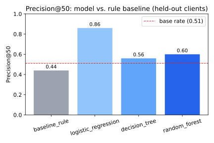
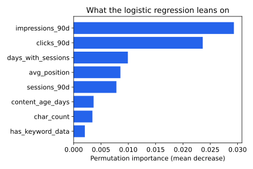
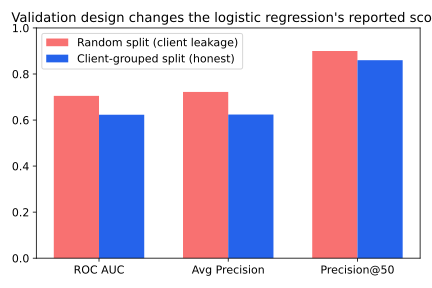

Which of a website's hundreds of pages should a content team review first? I test whether a simple supervised model can out-rank a transparent, hand-written staleness rule at that task, using 30,000 pseudonymized content pages across 32 clients from the FlyRank ML Internship dataset. I define decline as an observed 30-day traffic-trend proxy, hold out entire clients the model never trained on, and compare a Logistic Regression / Decision Tree / Random Forest family against the rule baseline on identical data and metrics. The winning model (Logistic Regression) reaches Precision@50 of 0.86 against the baseline's 0.44 — but the baseline itself scores below chance on unseen clients (ROC AUC 0.475), and re-running the same model on a naive random split inflates every metric by letting client identity leak across train/test. The honest takeaway: a learned ranking is a real, moderate improvement over the fixed rule for prioritizing review queues — not a breakthrough, and only trustworthy once you've checked that your validation split isn't quietly grading on client memorization.
A content team managing dozens of clients and thousands of pages can't manually review everything on a regular cadence. The practical decision is a prioritization problem: given limited review hours, which pages should go to the top of the queue this week? Get it wrong and the team either wastes time refreshing pages that didn't need it, or lets a genuinely declining page keep losing visibility unnoticed.
The obvious first answer is a rule: flag pages that are stale, get lots of traffic, and convert poorly. It's transparent and cheap to compute. The question this paper asks is whether a model that can weigh several signals jointly — rather than a fixed threshold on one or two — actually earns its added complexity, and whether that improvement survives an honest test on clients the model has never seen before.
This study uses the FlyRank ML Internship starter release —
content_refresh_anonymized.csv — not the full 79M-row warehouse. One row is
one pseudonymized content page; all metrics are aggregated over a trailing 90-day window.
is_declining_label = 1 when trend_direction == "down" — a
30-day-vs-prior-30-day impressions comparison already computed in the dataset. This is an
observed proxy, not a verified business outcome like lost revenue or
rankings.
trend_direction, trend_pct — these define the label; using them as features would be circular.impressions_last_30d, clicks_last_30d, sessions_last_30d, and the matching *_prev_30d columns — the raw ingredients of the label's own trend calculation, sitting inside its time window.content_id, client_id — pseudonymous identifiers, used only to group the train/test split, never as model inputs.provider_used, model_used — generation metadata, not a signal about page performance.No client names, raw URLs, or search queries appear anywhere in this analysis or its outputs — every identifier shown below is an anonymized pseudonym already present in the released dataset.
A transparent, unsupervised rule: score = 0.40·rank(log(impressions)) + 0.35·rank(staleness) + 0.25·rank(−CTR).
A page scores high when it's highly visible, hasn't been touched in a while, and converts
poorly — exactly the intuition a human reviewer would use, with no labels involved in
fitting it.
Logistic Regression → Decision Tree → Random Forest, in that order: start with the model a
strategist can fully explain, and only add complexity if it earns a measurable gain.
Roughly 18 numeric features (log-transformed traffic counts, CTR, position, engagement,
content properties), 3 one-hot categoricals, and 5 missingness flags
(has_keyword_data, has_word_count, has_position_data,
has_clicks, has_ai_sessions) — flags rather than a blind
fillna(0), because missingness in this dataset follows content type, and a
silent fill would quietly encode content type into every numeric feature.
Pages from the same client are never split across train and test (80/20, seed 42, via
GroupShuffleSplit). Client identity is a confound — traffic style, publishing
cadence, industry — that a random row-level split would let leak between train and test,
letting the model partly memorize "this is Client X's typical page" instead of learning
something that generalizes to a client it has never scored before. That's the actual
deployment scenario, so it's the actual test.
Verified in code, not just claimed: zero client overlap between train and test after the grouped split, and none of the excluded columns above appear in the final feature matrix.
Test-set base rate (share of pages labeled declining): 0.511 — a coin flip's worth of "declining," which is why raw accuracy would be a meaningless headline number here. Precision@50 and ROC AUC, both measured against that base rate, are the honest metrics.

| Model | ROC AUC | Avg. Precision | Precision@50 | Recall | F1 |
|---|---|---|---|---|---|
| baseline_rule | 0.475 | 0.480 | 0.44 | — | — |
| logistic_regression | 0.623 | 0.624 | 0.86 | 0.771 | 0.649 |
| decision_tree | 0.591 | 0.572 | 0.56 | 0.572 | 0.582 |
| random_forest | 0.611 | 0.600 | 0.60 | 0.707 | 0.627 |

None of the excluded label-window columns (trend_*, *_last_30d,
*_prev_30d) show up here, because they were never given to the model — a
feature that came out of nowhere with outsized importance would have been the
"suspiciously perfect, probably leakage" case to worry about.

Re-running the same Logistic Regression on a naive random split — where the same client's pages can land in both train and test — moves ROC AUC from 0.623 to 0.705 and Precision@50 from 0.86 to 0.90, purely from the validation design, not the model. This is the paper's second finding, not a footnote: a headline metric is only as honest as the split it was measured on.
The model's confident false positives cluster on pages with heavy staleness and near-zero CTR that look like textbook decline candidates on every feature available — but the actual 30-day trend moved for reasons the 90-day snapshot can't see (a seasonal dip that already recovered, a comparison-month anomaly). Some of this "error" is irreducible: the label is defined on a window deliberately excluded from features to avoid leakage, so the model is partly guessing at information it was never given. Its false negatives skew toward high-traffic, well-positioned pages that are newly declining — the model has learned "big pages don't decline" as a prior from the training base rate, which is a real blind spot if the goal is catching inflection points early rather than pages that have already been declining for a while.
is_declining_label is a rule on a 30-day impression window, not a verified outcome like lost revenue or rankings — directional evidence, not proof.Scoring the held-out (unseen) clients with the winning model produces a ranked queue of 6,163 pages. A content team should start at rank 1 and work down. Top of the queue:
| Rank | Content | Client | Score | Action | Reason |
|---|---|---|---|---|---|
| 1 | content_8ba781… | client_8527a8… | 0.941 | refresh_and_review_ctr | HIGH_TRAFFIC | LOW_CTR |
| 2 | content_c82bc0… | client_f369cb… | 0.937 | refresh_and_review_ctr | HIGH_TRAFFIC | LOW_CTR |
| 3 | content_87c007… | client_f369cb… | 0.937 | refresh_and_review_ctr | HIGH_TRAFFIC | LOW_CTR |
| 4 | content_a928cb… | client_f369cb… | 0.934 | monitor | LOW_CTR |
| 5 | content_26d48a… | client_f369cb… | 0.930 | monitor | LOW_CTR |
Full 6,163-row queue: work/outputs/w07_ranked_action_queue.csv in the repo.
High traffic + low click-through despite decent position — the page is being seen but not chosen. Prioritize headline/snippet review alongside content refresh.
Stale (180+ days untouched) and high-traffic — the highest-leverage combination for a straightforward content update.
Elevated risk signal but doesn't meet the traffic or staleness threshold for immediate action — track next cycle rather than act now.
Never auto-publish, auto-deprioritize, or auto-delete based on model score alone. Every top-ranked item gets a human review before any content change ships — this queue accelerates triage, it doesn't replace judgment.
Seed fixed at 42 throughout; scikit-learn 1.8.0. Full pipeline, in order: